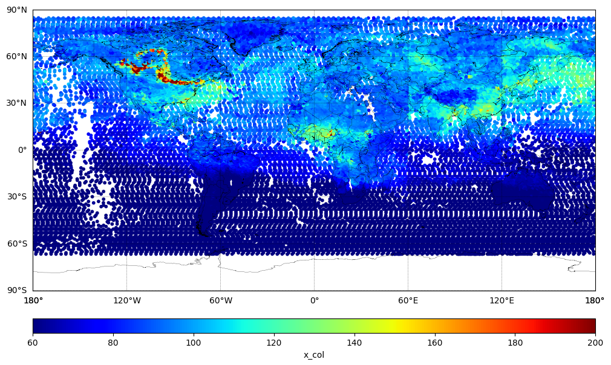

Carbon Monoxide Column (XCO)#
Plot the column variable x_col a.k.a. XCO, in ppbv. The XCO is a pre-calculated vertically averaged dry air mixing ratio of carbon monoxide from the surface to Top of Atmosphere (TOA).
Carbon Monoxide concentrations retrieved from CrIS JPSS-1 global observations.
Import packages#
import numpy as np
from netCDF4 import Dataset
import matplotlib.pyplot as plt
from mpl_toolkits.basemap import Basemap
Read data variables#
# Open the netCDF file
dataset = Dataset('./data/TROPESS_CrIS-JPSS1_L2_Summary_CO_20230516_MUSES_R1p20_FS_F0p6.nc', 'r')
# Read the data from your variables
latitude = dataset.variables['latitude'][:]
longitude = dataset.variables['longitude'][:]
x_col = dataset.variables['x_col'][:]
dataset.close()
Create plots#
# Specify figure size (in inches)
plt.figure(figsize=(12, 8))
# Create a basemap instance
m = Basemap(projection='cyl', resolution='l',
llcrnrlat=-90, urcrnrlat=90, # set latitude limits to -90 and 90
llcrnrlon=-180, urcrnrlon=180) # set longitude limits to -180 and 180
m.drawcoastlines(linewidth=0.2)
m.drawcountries(linewidth=0.2)
# Draw parallels (latitude lines) and meridians (longitude lines)
parallels = np.arange(-90., 91., 30.)
m.drawparallels(parallels, labels=[True,False,False,False], linewidth=0.3)
meridians = np.arange(-180., 181., 60.)
m.drawmeridians(meridians, labels=[False,False,False,True], linewidth=0.3)
# Standard catter plot
# Transform lat and lon to map projection coordinates
x, y = m(longitude, latitude)
# Plot the data using scatter (you may want to choose a different colormap and normalization)
sc = m.scatter(x, y, c=x_col, cmap='jet', s=10, vmin=60.0, vmax=200.0)
# Add a colorbar
cbar = m.colorbar(sc, location='bottom', pad="10%")
cbar.set_label('x_col')
plt.show()
